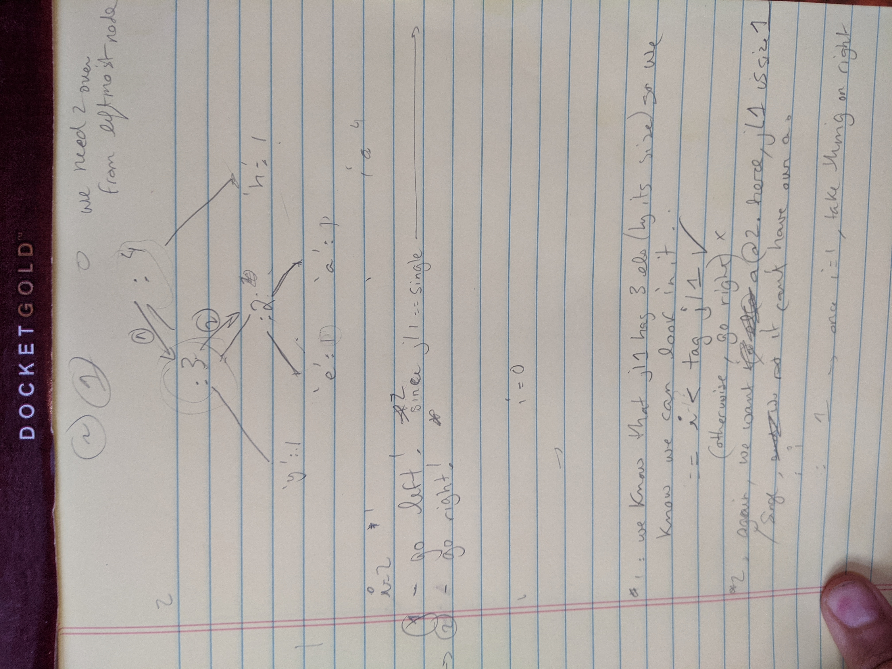

I spent the first 7 weeks of my time stint at Recurse Center learning Haskell. Why would a front end developer spend time learning Haskell? Well:
At first, I wanted to learn Typescript in order to work with types.
Then, someone at Recurse told me that if I really wanted to get good with types, I should try out Elm. So I tabled Typescript and started learning Elm.
Then, someone told me that if I really wanted to learn Elm, I should learn Haskell. Because Elm is like kindergarten for Haskell. So I tabled Elm and started learning Haskell.
And so learning Haskell was a breeze and I got bored quickly.
That is a lie. Learning Haskell looked more like this:

After 7 weeks of being stuck at the bottom of a recursive rabbit hole, I came out the other side having completed Brent Yorgey's Introduction to Haskell course, and it was a true pleasure. Learn You A Haskell was by my best friend and one of the best-written programming books I've ever read. I did my first-ever binary tree traversal, and beefed up my recursive abilities.
After some encouragment from my RC peers, I gave a short introductory presentation that touches upon how monads give us some needed flexibility when working with a strict type system. Enjoy.
Once again, I gave this presentation for Recurse Center. If you want to do a "writing retreat for programmers", you should apply.